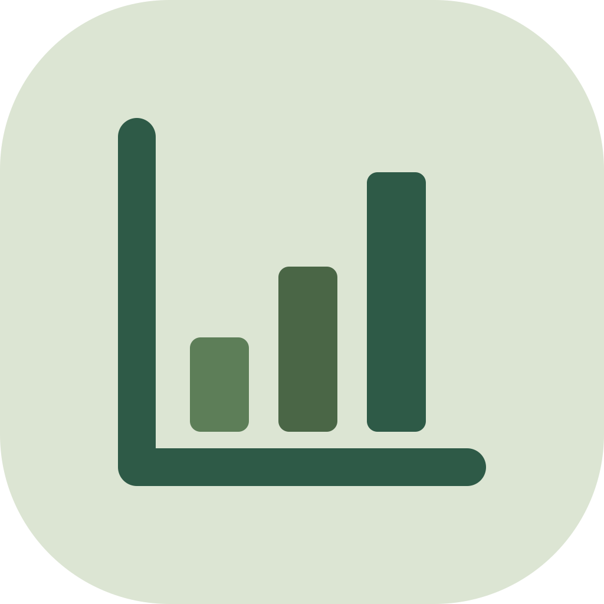

SEC Financial Statements API: income, balance sheet, cash flow
On Apify StoreGet clean financial statements of any US-listed company from the SEC's own XBRL data: revenue, profit, EPS, balance sheet, cash flow, free cash flow and margins, per fiscal year or per quarter, by ticker or CIK. For analysts, finance apps and AI agents that need a company's numbers over 5-20 years without parsing filings. Every value cites the XBRL tag and the SEC filing it came from.
Pricing (pay per event): $0.005 per company-period row ($5 per 1,000). Five years of Apple's annual figures cost $0.025; eight quarters $0.04. Empty or failed lookups are free, and the Actor stops at your max charge limit.
Where to get it
The same data and the same rows on every channel; pick the one your agent or code already uses.
| Channel | How | Pay |
|---|---|---|
| Apify Store | apify.com/bosco_labs/sec-company-financials: run it in the Apify Console, by the Apify API or from Apify's MCP server (https://mcp.apify.com?tools=bosco_labs/sec-company-financials) | $0.005 per company-period row, billed to your Apify account |
| HTTP API | POST https://api.boscolabs.dev/v1/sec-company-financials with your key (get a key, $5.00 free trial) | $0.005 per company-period row, prepaid credits |
| MCP | https://api.boscolabs.dev/mcp (remote, same key) or https://api.boscolabs.dev/mcp/free (no key: find and plan) · setup | $0.005 per company-period row, prepaid credits |
| x402 | POST https://api.boscolabs.dev/v1/sec-company-financials without a key: pay per call, no account (how) | $0.005 per company-period row, in USDC on Base |
Questions agents ask
- “How did Microsoft's revenue, net income and free cash flow develop over the last 8 quarters?”
- “Compare Nvidia, AMD and Intel on operating margin for the last 5 fiscal years.”
- “What was JPMorgan's net income in 2024, and which filing is it from?”
- What was Apple's free cash flow in each of the last 5 fiscal years?
- How much cash and long-term debt did Tesla have over the last 4 quarters?
Example
Input
{ "tickers": ["AAPL", "MSFT"], "period": "quarterly", "years": 2, "metrics": ["revenue", "net_income", "free_cash_flow"] }Output
{
"ticker": "AAPL",
"cik": "0000320193",
"company_name": "Apple Inc.",
"fiscal_year": 2025,
"fiscal_period": "FY",
"period_start": "2024-09-29",
"period_end": "2025-09-27",
"form": "10-K",
"filed": "2025-10-31",
"accession_number": "0000320193-25-000079",
"source_url": "https://www.sec.gov/Archives/edgar/data/320193/000032019325000079/0000320193-25-000079-index.htm",
"currency": "USD",
"revenue": 416161000000,
"gross_profit": 195201000000,
"operating_profit": 133050000000,
"net_income": 112010000000,
"eps_diluted": 7.46,
"total_assets": 359241000000,
"cash_and_equivalents": 35934000000,
"long_term_debt": 78328000000,
"total_equity": 73733000000,
"operating_cash_flow": 111482000000,
"capex": 12715000000,
"free_cash_flow": 98767000000,
"gross_margin": 0.4691,
"operating_margin": 0.3197,
"net_margin": 0.2692,
"revenue_growth": 0.0643,
"metrics_found": 29,
"sources": {
"revenue": {
"tag": "us-gaap:RevenueFromContractWithCustomerExcludingAssessedTax",
"accession": "0000320193-25-000079"
},
"...": "one entry per reported metric"
},
"filings": {
"0000320193-25-000079": {
"form": "10-K",
"filed": "2025-10-31",
"url": "https://www.sec.gov/Archives/edgar/data/320193/000032019325000079/0000320193-25-000079-index.htm"
}
},
"warnings": [],
"schema_version": "1",
"retrieved_at": "2026-11-05T21:38:54+00:00"
}What you get
| Field | Type | Meaning |
|---|---|---|
schema_version | string | Output schema version. |
ticker | string | null | Main ticker in the SEC's current ticker list (null if none). |
cik | string | SEC CIK, 10 digits. |
company_name | string | Company name as in SEC companyfacts. |
fiscal_year | integer | Fiscal year as the company names it (Apple's year ending September 2025 = 2025). |
fiscal_period | string | FY for a fiscal year, Q1-Q4 for a discrete 3-month fiscal quarter. |
period_start | string | null | First day of the period (YYYY-MM-DD). |
period_end | string | Last day of the period = balance-sheet date (YYYY-MM-DD). |
form | string | null | Form of the main filing for this period: 10-K, 10-Q, 20-F, 40-F, 6-K or an /A amendment. |
filed | string | null | Filing date of that filing (YYYY-MM-DD). |
accession_number | string | null | SEC accession number of the filing most values come from. |
source_url | string | null | EDGAR index page of that filing. |
provided_by | string | Who compiled this row; cite together with source_url. |
currency | string | Reporting currency of all money values (ISO 4217, e.g. USD, EUR, DKK). Values are in full units, not thousands. |
revenue | number | null | Total revenue / net sales (for banks: total net revenue). In currency. |
cost_of_revenue | number | null | Cost of revenue / cost of goods and services sold. In currency. |
gross_profit | number | null | Gross profit; when not tagged, revenue - cost_of_revenue (sources says derived). In currency. |
research_and_development | number | null | Research and development expense. In currency. |
selling_general_and_administrative | number | null | Selling, general and administrative expense (null when the company reports sales/marketing and G&A separately). In currency. |
operating_profit | number | null | Operating income (loss). Null for most banks and insurers. In currency. |
profit_before_tax | number | null | Income from continuing operations before income taxes. In currency. |
net_income | number | null | Net income including noncontrolling interests (ProfitLoss), else net income attributable to the parent; as in the esef-annual-reports Actor. In currency. |
net_income_attributable_to_parent | number | null | Net income attributable to the parent's shareholders (the US 'net income' headline). In currency. |
eps_basic | number | null | Basic earnings per share, in currency per share. Never derived (null for Q4 unless reported). |
eps_diluted | number | null | Diluted earnings per share, in currency per share. Never derived. |
weighted_average_shares_basic | number | null | Weighted average shares outstanding, basic. Never derived. |
weighted_average_shares_diluted | number | null | Weighted average shares outstanding, diluted. Never derived. |
depreciation_amortisation | number | null | Depreciation, depletion and amortization (cash flow statement). In currency. |
total_assets | number | null | Total assets at period end. In currency. |
current_assets | number | null | Total current assets at period end. Null for banks and insurers (unclassified balance sheet). In currency. |
cash_and_equivalents | number | null | Cash and cash equivalents at period end (banks: cash and due from banks). In currency. |
total_liabilities | number | null | Total liabilities; when not tagged, total_assets - total_equity (sources says derived). In currency. |
current_liabilities | number | null | Total current liabilities. Null for banks and insurers. In currency. |
noncurrent_liabilities | number | null | Total non-current liabilities, when tagged. In currency. |
long_term_debt | number | null | Long-term debt, non-current portion where tagged, else total long-term debt; sources shows the tag. In currency. |
total_equity | number | null | Total equity including noncontrolling interests, else stockholders' equity. In currency. |
equity_attributable_to_parent | number | null | Stockholders' equity attributable to the parent. In currency. |
shares_outstanding | number | null | Common shares outstanding at the balance-sheet date. |
operating_cash_flow | number | null | Net cash from operating activities. In currency. |
investing_cash_flow | number | null | Net cash from investing activities. In currency. |
financing_cash_flow | number | null | Net cash from financing activities. In currency. |
capex | number | null | Capital expenditure: payments for property, plant and equipment, as a positive number. Null for most banks. In currency. |
dividends_paid | number | null | Dividends paid in cash, as a positive number. In currency. |
free_cash_flow | number | null | Derived: operating_cash_flow - capex. |
ebitda | number | null | Derived: operating_profit + depreciation_amortisation. |
gross_margin | number | null | Derived: gross_profit / revenue (0.25 = 25%). |
operating_margin | number | null | Derived: operating_profit / revenue. |
net_margin | number | null | Derived: net_income / revenue. |
return_on_equity | number | null | Derived: net_income / total_equity, fiscal-year rows only. |
equity_ratio | number | null | Derived: total_equity / total_assets. |
revenue_growth | number | null | Derived: revenue / revenue of the same fiscal period one year earlier - 1 (year over year, also for quarters). |
metrics_found | integer | How many of the reported metrics (not the derived ones) have a value. |
sources | object | Only with includeSources: per metric {tag: XBRL concept used, accession: filing it came from, derived: how a quarter value was computed (e.g. 'fiscal year - 9-month YTD') or the formula for gross_profit/total_liabilities fallbacks}. |
filings | object | Only with includeSources: per accession number cited in sources, its form, filing date and EDGAR URL. |
warnings | array | Notes on this row: quarter values derived from year-to-date figures, restated values (latest filing used), quarterly data missing. |
retrieved_at | string | UTC time the row was produced. |
Use with AI agents (MCP)
Add this URL to your MCP client (Claude, Cursor, VS Code, ...) to load the Actor as a tool through the Apify hosted MCP server. It signs you in with OAuth or accepts Authorization: Bearer <APIFY_TOKEN>.
https://mcp.apify.com?tools=bosco_labs/sec-company-financialsFor “How did Microsoft's revenue, net income and free cash flow develop over the last 8 quarters?” the agent passes:
{"tickers": ["MSFT"], "period": "quarterly", "years": 2, "metrics": ["revenue", "net_income", "free_cash_flow"]}stable, typed JSON, one row per company and period, newest first. Every row has schema_version, a source_url (the EDGAR filing most values come from), and with includeSources the tag and accession number of each value, so the agent can cite its source. Derived quarter values and restatements are explained in warnings. A typical answer is 20-40 KB with sources, 2-6 KB without. An unknown ticker fails in seconds with suggestions ("APPLE (did you mean AAPL?)"); a company without XBRL data gets a status message saying so.
Or call the Apify API: POST https://api.apify.com/v2/acts/bosco_labs~sec-company-financials/run-sync-get-dataset-items with the input as JSON body. Cost: $0.005 per company-period row.
HTTP API
Also on the Bosco Labs HTTP API (beta): same input and same rows as the Actor, $0.005 per company-period row from prepaid credits (max 10 tickers/CIKs x 20 years per call). Get a key with a $5.00 free trial; see prices and limits.
curl https://api.boscolabs.dev/v1/sec-company-financials \
-H "Authorization: Bearer $BOSCO_API_KEY" \
-H "Content-Type: application/json" \
-d '{"tickers": ["MSFT"], "period": "quarterly", "years": 2, "metrics": ["revenue", "net_income", "free_cash_flow"]}'Input fields
| Field | Type | Meaning |
|---|---|---|
tickers | array | US tickers as listed by the SEC, e.g. ["AAPL", "MSFT"]; share classes with a dash or dot, e.g. "BRK-B". Foreign companies filing 20-F/40-F work too, e.g. "NVO". Mapped to the CIK with the SEC's company_tickers.json; an unknown ticker is skipped with suggestions in the status message. Empty = use ciks. |
ciks | array | SEC Central Index Keys as digits, leading zeros optional, e.g. ["320193"] for Apple. Use for delisted companies and filers without a ticker. Empty = use tickers; at least one of the two is required. |
period | string | "annual" = one row per fiscal year (FY). "quarterly" = one row per fiscal quarter, Q1-Q4, each a discrete 3-month period (Q4 and year-to-date-only cash flows are derived, see warnings). Companies without quarterly XBRL data (most 20-F filers) return fiscal years instead. Default "annual". |
years | integer | How many of the latest fiscal years to return per company, e.g. 5 (5 rows annual, up to 20 rows quarterly; 2 with quarterly = the last 8 quarters). XBRL data starts in 2009-2011. Default 5, max 20. |
metrics | array | Only these output fields, e.g. ["revenue", "net_income", "free_cash_flow", "operating_margin"]. Valid: revenue, cost_of_revenue, gross_profit, research_and_development, selling_general_and_administrative, operating_profit, profit_before_tax, net_income, net_income_attributable_to_parent, eps_basic, eps_diluted, weighted_average_shares_basic, weighted_average_shares_diluted, depreciation_amortisation, total_assets, current_assets, cash_and_equivalents, total_liabilities, current_liabilities, noncurrent_liabilities, long_term_debt, total_equity, equity_attributable_to_parent, shares_outstanding, operating_cash_flow, investing_cash_flow, financing_cash_flow, capex, dividends_paid, free_cash_flow, ebitda, gross_margin, operating_margin, net_margin, return_on_equity, equity_ratio, revenue_growth. Empty = all of them. |
includeSources | boolean | true = each row has sources (per value: the XBRL tag and the SEC accession number it came from, plus how it was derived) and filings (form, filing date and URL of each filing cited). false = values only, about 3x smaller rows. Default true. |
Sources, licence and limits
Which companies? Every SEC filer with XBRL financial statements: US companies filing 10-K and 10-Q (large companies since 2009, all since 2011) and foreign companies filing 20-F or 40-F (IFRS, mostly since 2018). Foreign filers report in their own currency (e.g. Novo Nordisk in DKK, see currency), and most of them report annually only: asking them for quarters returns fiscal years with a warning.
How fresh? The SEC updates companyfacts within minutes of a filing, so a 10-Q is in the next run after it is filed.
Are the values as reported? Yes: as tagged in the filings (latest restated value), not adjusted, not normalized for one-offs, not converted between currencies. No forecasts.
Banks and insurers? Their statements have no gross profit, operating income, current assets, current liabilities or (usually) capex, so those fields, and the margins and free cash flow built on them, are null. Revenue for banks is total net revenue (JPMorgan: 177,556m for 2024); profit_before_tax, net_income, EPS, assets, liabilities and equity are there. cash_and_equivalents for banks is usually cash and due from banks.
Why is a field empty for some companies? Companies tag differently. Some use their own company-specific tags instead of the standard ones (Microsoft reports sales & marketing and G&A separately, so selling_general_and_administrative is null); those stay null rather than being guessed. metrics_found tells you how complete a row is.
What is not included? Market data (share prices, market cap, valuation multiples), segment and geographic breakdowns, guidance, non-GAAP figures, and anything before a company's first XBRL filing (2009-2011).
Legal basis? SEC filings are US government public records. See LEGAL.md.